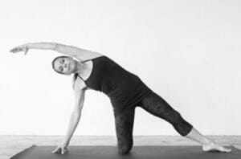

Vinyasa Yoga
This class is based on the traditional parameters of Vinyasa Yoga which are: steadiness, comfort, breath and unwavering focus on breath. This dynamically flowing practice synchronizes postures with the breath. This is a swift moving, theme-based class with mantra, mudra, pranayama (breath), surya namaskaras (sun salutations), standing asanas, twists, balances, core strengthening postures, backbends and inversions and a looong rest at the end. You will leave feeling Yoga Good!
Please note: there is little instruction in this class, instead it is focused on the flow and is best for those with some existing yoga practice. This class is Not Recommended for people with injuries.
Morning Yoga
You will encourage circulation in the muscles and train the breath for the day ahead. Expect mantras, mudras, pranayama, basic asanas and a guided meditation to finish the session.
This is an all-levels class and is suitable for pregnant women, students who are new to yoga and de-conditioned students as well as long-time practitioners. This class may contain Hatha yoga postures, Vinyasa Krama (slow vinyasa sequences) and sometimes Kundalini Kriyas. The sequence and theme always changes so you will keep progressing in your yoga practice.
This class will create a mind-body-spirit synchronicity so you’ll feel Yoga Good all day long!

Dharma Yoga
You will be lead through the Shiva Namaskara Vinyasa practice created by Sri Dharma Mittra. This is an all-levels moderately paced yoga class with prana enhancing breathing techniques, mantras, yoga asanas, and a nice long healing guided relaxation practice at the end. This class is designed to help the practitioner maintain good health physically and mentally and to increase stamina.